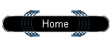

|
This project was started to give new players a grasp of the basics of Chron X. They can earn cards by beating a Desperado.
The Desperados are a group of veteran/suitcase players who have volunteered their time to help out new players. All officially recognized Desperados display a hat in the third slot of their character.
If you have the time and resources to be a Desperado, help out new players in a Corral near you! Officially recognized Desperados have shown to be able to help new players, have experience with the game, do not commit simple mistakes in game and get along well with the Chron X community.
Visit Genesis Forums for Chron X discussion!
Legal Stuff
|